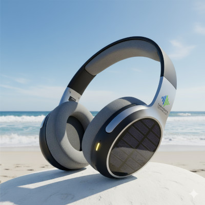
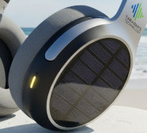
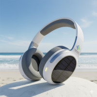
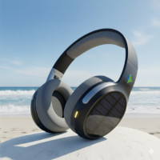

O headphone mais sustentável e recarregável pela luz solar do Planeta!
Aproveite a experiência sonora sustentável com os headphones Solar Beat da Tararan's Technology. O Solar Beat foi desenvolvido para facilitar o cotidiano dos usuários, com a inovação do carregamento solar exclusivo, além de um desig elegante e moderno. Com o Solar Beat, você não terá que se preocupar com carregadores tradicionais nunca mais, e o melhor, garantindo o funcionamento completo de seu dispositivo a qualquer hora do dia, com qualidade e responsabilidade com o meio ambiente. Tararan's Technology: Tecnologia e Sustentabilidade, juntos por você.

Especificações Técnicas
| Característica | Detalhe |
|---|---|
|  |
Placas solares embutidas nas astes do headphone, garantindo que consiga captar os raios solares a qualquer momento. |
| Earpads feitos com espumas sustentáveis para garantir o conforto do usuário, além do isolamento completo do som. |
Galeria de Imagens

